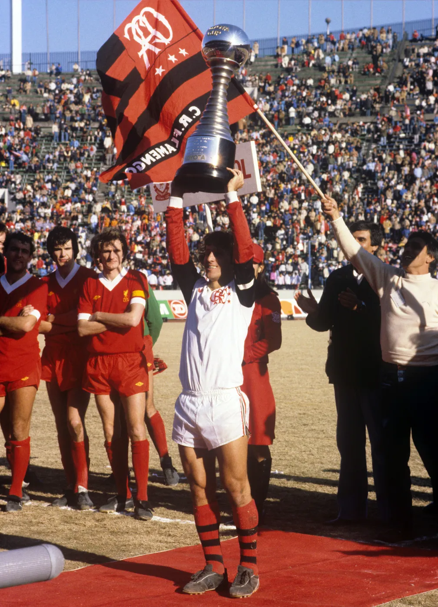
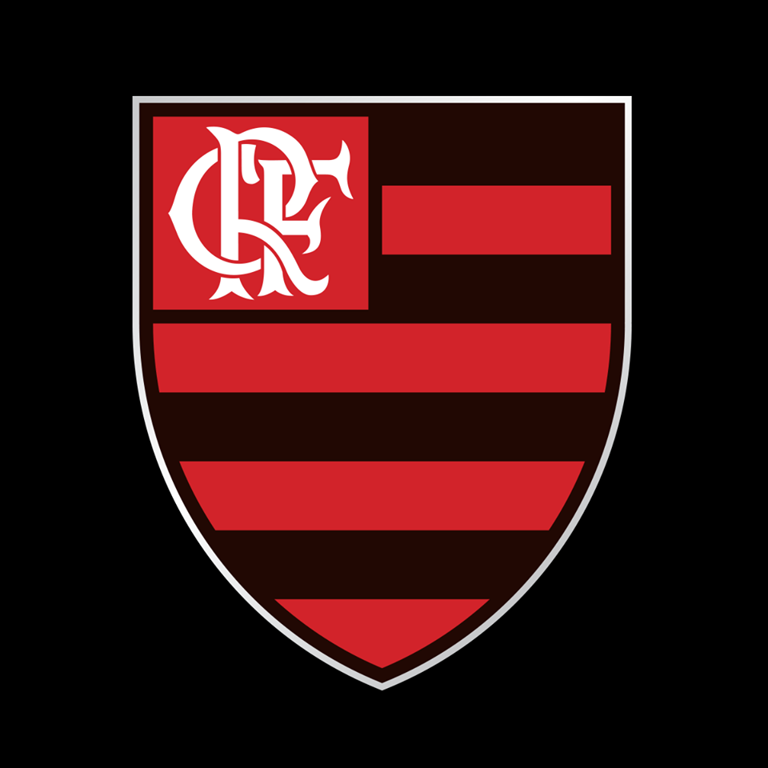

História Do Flamengo
O Flamengo foi fundado em 17 de novembro de 1895 para as disputas de remo. A entrada da equipe no futebol aconteceu em 1912. Atualmente, o time rubro-negro é o maior vencedor da história do Campeonato Carioca, com 31 títulos. Segundo diversas pesquisas, é o clube com o maior número de torcedores do País.
Nossa missão é: "Ser o Maior Campeão de todos os tempos".
Maracanã
Nosso Estádio é o Coração do Rio
Benefícios do Flamengo

- Perder Jogo fácil
- Passar Raiva Assisitindo ao Jogos
- Entregar todas as Finais!
- Ser Alvo de zoação por todos os Times Rivais